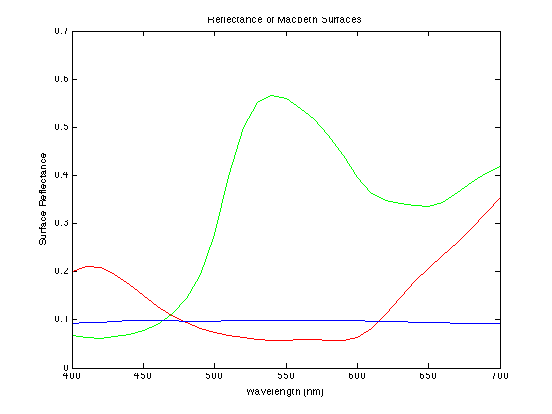
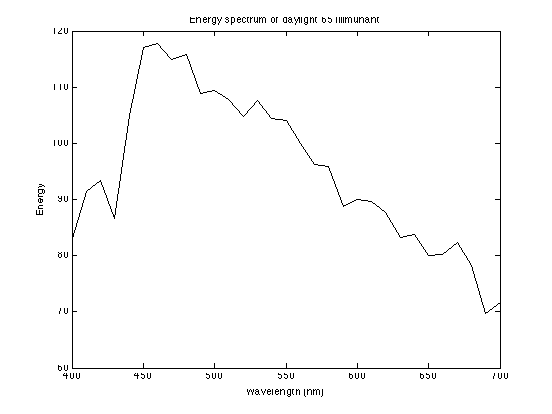
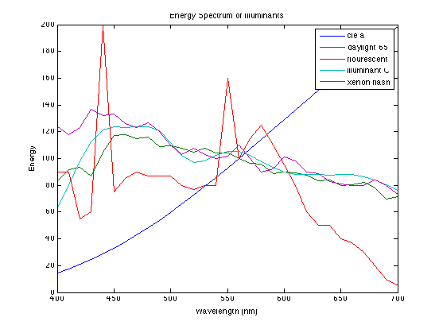
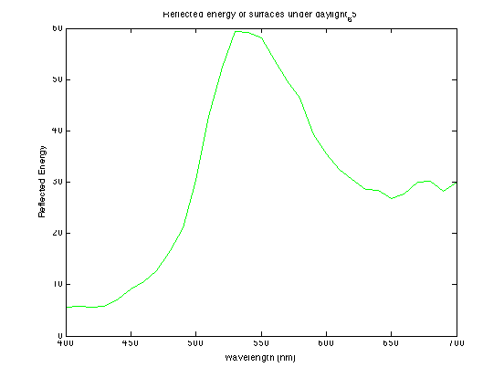
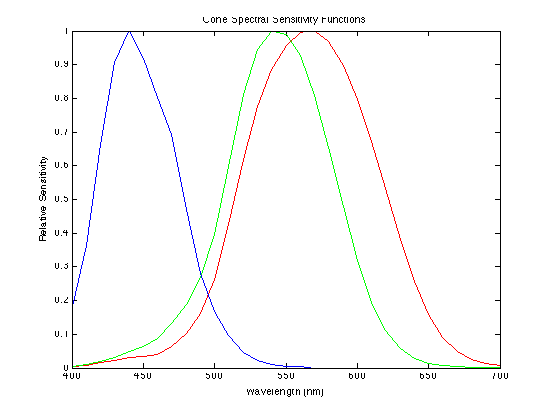
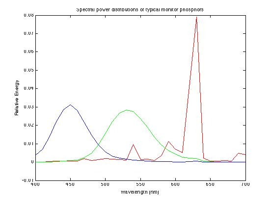
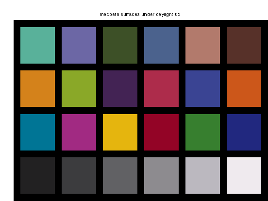
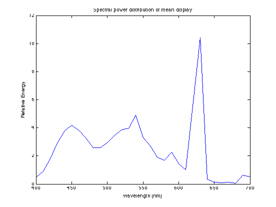
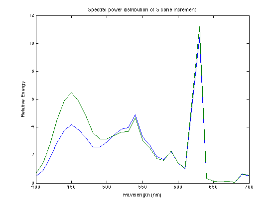

% In this tutorial, we will introduce some basic spectral calculations that % we can use to understand color vision, surface reflectances, illuminants, % photoreceptor encoding, and trichromacy. % You will notice that much of the work below involves matrix algebra. I % suggest that you pull out a pad of paper and draw matrix tableaus as we % proceed to help you follow the calculations. % Running the tutorial: % - Run matlab % - Change directory to the folder containing the tutorial using 'cd ' at % the matlab prompt. % - Type 'edit colorMatchingTutorial' at the matlab prompt to open this % file. % - Click on Cell in the menubar and select Enable Cell Mode. % - The tutorial is subdivided into sections called cells. Each cell % contains some comments and explanations along with some code. Click the % mouse in the first cell (sampling the visible spectrum) and use Evaluate % Current Cell from the Cell menu to evaluate the code segment in that % cell. Or use the keyboard shortcut (command-enter or apple-return on the % Mac). Continue reading the comments for each successive cell and then % evaluating it. % - Click on File in the menubar and select Save and then select Publish To % HTML to produce a version of this file with the results inserted at each % step, that you can view with a web browser. By default, the output is % saved in a subfolder called html. % - For more information about cell mode, choose Matlab Help from the Help % menu and search for "Rapid Code Iteration Using Cells"
%%%%%%%%%%%%%%%%%%%%%%%%%%%%%%%%%%%%%%%%%%%%%%%%%%%%%%%%%%%%%%%%%%%%%%%% % SAMPLING THE VISIBLE SPECTRUM % Throughout, we will be sampling wavelenghts in 10nm steps from 400 to 700 % so define the spectrum as follows: spectrum = linspace(400,700,31);
%%%%%%%%%%%%%%%%%%%%%%%%%%%%%%%%%%%%%%%%%%%%%%%%%%%%%%%%%%%%%%%%%%%%%%%% % SURFACE REFLECTANCE % This loads in the macbeth color checker and the munsell % standard surfaces load surfaces % macbeth, munsell size(macbeth) size(munsell) % The Macbeth Color Checker is a set of 24 surfaces commonly used to % evaluate color balancing systems. The materials in the Color Checker % were selected to have the same surface reflectance functions as various % important surfaces that are commonly used in television and film images. % We will read in a matrix of data. Each row of the matrix is the % reflectance function of one of the Macbeth surfaces, measured at each of % 31 samples in the visible spectrum. (Most of the visible spectrum is in % the 400-700 nanometers wavelength region.) Thus the variable 'macbeth' % is a 24x31 matrix of surface spectra. Each row is the reflectance % function for one surface. Likewise, the 'munsell' variable is a 359x31 % matrix in which each row is the reflectance function of a surface.
ans =
24 31
ans =
359 31
%%%%%%%%%%%%%%%%%%%%%%%%%%%%%%%%%%%%%%%%%%%%%%%%%%%%%%%%%%%%%%%%%%%%%%%% % LOOK AT THE SURFACE REFLECTANCE SPECTRA % The 8th row of the macbeth is a surface that typically looks greenish. We % plot the fractional reflectance (as a function of wavelength) for this % surface. figure(1);clf plot(spectrum,macbeth(8,:),'g'); xlabel('Wavelength (nm)'); ylabel('Surface Reflectance'); title('Reflectance of Macbeth Surfaces'); % For example, about 28% of the light at wavelength 500 nm is % reflected by the "Green" surface. green_500 = macbeth(8,find(spectrum==500)) % Here is the fractional reflectance of red surface: hold on plot(spectrum,macbeth(9,:),'r'); % And here it is for a gray surface: plot(spectrum,macbeth(20,:),'b'); hold off
green_500 =
0.2779
 %%%%%%%%%%%%%%%%%%%%%%%%%%%%%%%%%%%%%%%%%%%%%%%%%%%%%%%%%%%%%%%%%%%%%% % TYPICAL DAYLIGHT SPECTRUM % Now, load in the illuminants. Each illuminant vector represents the % amount of light present at each wavelength. Again, the light is sampled % at 31 points in the visible spectrum, so we get vector of 31 numbers % representing the spectral power distribution (SPD) for that light. load illuminants %cie_a,daylight_65,floursecent,illuminant_C,xenon_flash % Make a plot of daylight_65. Daylight_65 is the standard illuminant which % represents a mix of blue sky and clouds. Note: the energy units are % arbitrary. figure(1);clf plot(spectrum,daylight_65,'k'); xlabel('Wavelength (nm)'); ylabel('Energy'); title('Energy spectrum of daylight 65 Illimunant');
%%%%%%%%%%%%%%%%%%%%%%%%%%%%%%%%%%%%%%%%%%%%%%%%%%%%%%%%%%%%%%%%%%%%%% % MORE ILLUMINANTS % Here are the spectral power distributions of some other illuminants. % Several of these are used as international standards for illuminants, as % specified by the CIE (an international standards committee for color % printing and technology). figure(1);clf plot(spectrum,[cie_a',daylight_65',flourescent',illuminant_C',xenon_flash']); xlabel('Wavelength (nm)'); ylabel('Energy'); title('Energy Spectrum of Illuminants'); legend('cie a','daylight 65','flourescent','illuminant C','xenon flash');
%%%%%%%%%%%%%%%%%%%%%%%%%%%%%%%%%%%%%%%%%%%%%%%%%%%%%%%%%%%%%%%%%%%%%%% % CALCULATE THE SPECTRAL SIGNAL RESULTING FROM A LIGHT REFLECTING OFF A % MACBETH SURFACE % The spectral signal reaching the eye is the pointwise product of the % incident light and the reflectance of the surface at the each wavelength. % This can be computed using .* in matlab. Or it can be expressed as a % matrix product, where the surface reflectance is multiplied by a big % diagonal matrix with the light intensities at each wavelength along the % diagonal. As an example, plot the spectral signal coming off the green % Macbeth surface for daylight illumination. spectralSignal = macbeth(8,:)' .* daylight_65'; figure(1);clf plot(spectrum,spectralSignal,'g'); xlabel('Wavelength (nm)'); ylabel('Reflected Energy'); title('Reflected energy of surfaces under daylight_65')
%%%%%%%%%%%%%%%%%%%%%%%%%%%%%%%%%%%%%%%%%%%%%%%%%%%%%%%%%%%%%%%%%%%%%% % HUMAN CONE SPECTRAL SENSITIVITIES % Now we want to measure the photoresponses of the human cones to these % stimuli. The human cone spectral sensitivities have been measured and % correspond closely with behavioral color matching data known for many % years. We now read in a matrix of the human cone sensitivities. There are % three classes of cone, the so-called L,M, and S cones with (L)ong-, % (M)iddle-, and (S)hort-wavelength peak sensitivities. We represent each % cone by its sensitivity at each of 31 sample wavelengths in the spectrum. % Thus, we have a 3x31 matrix representing the human cone spectral % sensitivities. load cones %cones % Look at the three cone classes superimposed. Notice how close % the L and M cones are in terms of their peak sensitivities. figure(1) clf plot(spectrum,cones(1,:),'r'); hold on plot(spectrum,cones(2,:),'g'); plot(spectrum,cones(3,:),'b'); xlabel('Wavelength (nm)'); ylabel('Relative Sensitivity'); title('Cone Spectral Sensitivity Functions'); ylim([0 1]);
%%%%%%%%%%%%%%%%%%%%%%%%%%%%%%%%%%%%%%%%%%%%%%%%%%%%%%%%%%%%%%%%%%%%%% % HUMAN CONE RESPONSES TO THE SPECTRAL SIGNAL % We can describe the photoreceptor responses as a matrix multiplication. The % matrix product of the receptor sensitivites and the spectral % signal gives the photoisomerizations in each receptor class due to each % of the surfaces. The cone spectral sensitivity is a 3x31 matrix and the % spectralSignal is a 31x1 vector so the product is a vector of 3 numbers, % one for each of the cones (L, M, S). coneSignals = cones * spectralSignal % So these three numbers represent the relative responses of the cones in % your retina to a real surface illuminated by a real light source. Note % that the units are arbitrary because both the reflectance function and % the cone sensitivities were scaled between 0-1. We could redo these % calculations, keeping track of the actual intensity of the illuminant % such that the coneSignals could be expressed in terms of the number of % photopigment isomerizations but that's not worth the effort for our % purposes here.
coneSignals = 497.7669 429.1217 72.9683
%%%%%%%%%%%%%%%%%%%%%%%%%%%%%%%%%%%%%%%%%%%%%%%%%%%%%%%%%%%%%%%%%%%% % MONITOR PHOSPHORS % We know from the color matching experiment that we can match any test % light (including the above spectralSignal from the Macbeth surface) by an % appropriate combination of 3 primary lights. An example of the % application of this principle is in color TV, for which you can display % any of a large number of colors using the 3 lights in the display. For a % CRT (if you can still buy one) the 3 primaries are generated by an % electron beam exciting 3 types of phosphors (a phosphor is a substance % that exhibits phosphorescence or sustained glowing after exposure to % electrons). % Read in the spectra of a typical set of color monitor phosphors. Each row % in this matrix corresponds to one phosphor, giving its relative output % energy as a function of wavelength. These are probably similar to the 3 % primaries on your screen, but not quite right because you are probably % using a flat panel display. We could measure the spectra for the 3 % primaries on your screen, a procedure called color calibration. load phosphors %phosphors % Look at the three phosphor spectra together figure(1);clf plot(spectrum,phosphors(1,:),'r'); hold on plot(spectrum,phosphors(2,:),'g'); plot(spectrum,phosphors(3,:),'b'); xlabel('Wavelength (nm)'); ylabel('Relative Energy'); title('Spectral power distributions of typical monitor phosphors');
%%%%%%%%%%%%%%%%%%%%%%%%%%%%%%%%%%%%%%%%%%%%%%%%%%%%%%%%%%%%%%%%%%%% % COLOR MATCHING % Here we calculate the monitor phosophor intensities required to % generate the *same* receptor responses in your eye that the Macbeth % surface generates under daylight. To do so, we first find the % linear tranform that gives the cone responses due to the different % monitor spectra. To understand this calculation, try pulling out a % piece of paper and convincing yourself that this is the way to get % cone responses from the phosphor intensities. The variable cones is a % 3x31 matrix and phosphors' (transpose of phosphors) is a 31x3 matrix. The % product is a 3x3 matrix that takes 3 numbers corresponding to the % intensities of each of the 3 monitor primaries and converts it into 3 % numbers corresponding to the 3 cone responses. monitor_to_cones = cones * phosphors' % Now, the inverse of this matrix tells us how to set the phosphors to % achieve any desired cone response: cones_to_monitor = inv(monitor_to_cones) % We apply this transformation to the desired cone responses and % obtain the necessary monitor intensities for rendering a color % on the monitor that matches the Macbeth surface reflectance under % daylight. monitorSignals = cones_to_monitor * coneSignals
monitor_to_cones =
0.0908 0.1556 0.0174
0.0378 0.1623 0.0256
0.0051 0.0162 0.1379
cones_to_monitor =
18.3038 -17.6384 0.9637
-4.2301 10.3529 -1.3891
-0.1753 -0.5663 7.3776
monitorSignals =
1.0e+03 *
1.6123
2.2357
0.2081
%%%%%%%%%%%%%%%%%%%%%%%%%%%%%%%%%%%%%%%%%%%%%%%%%%%%%%%%%%%%%%%%%%%% % RENDERING % We have a function, 'renderSurfaces' to do the above work for us and % display an image of all of the Macbeth surfaces under a particular % illuminant. This function starts with % spectral representations of a set of surfaces, a light, the human cones, % and the monitor phosphors. It produces a color image that is % displayed as a true-color picture. If we were using the calibrated SPDs % of the primaries in your screen then the rendered image would be an exact match. scaleFactor = 155; renderSurfaces(macbeth,daylight_65,cones,phosphors,scaleFactor,... 'macbeth surfaces under daylight 65') % You may get a warning such as: % Warning, image(s) 13 out of range % meaning that there are some colors that are not properly represented. % The color-image is made up of float rgb values that are rescaled to 8bit % values In this particular case, there is one color with rgb values that % are negative. This means that this color can not be rendered on this % monitor. It is out of the monitor's gamut. The blue-ish square near the % lower left corner, for example, is the color that is out of range. % Also, we used an arbitrary scale factor to display these colors. Change % the scaleFactor to 255 and re-evaluate to display the same surfaces under % "dim" daylight conditions. % If it weren't for this gamut problem (arbitrary scale factor and clipping % negative values), and if the phosphor spectra accurately reflected your % screen, the Macbeth chart you see would look like it would look under % normal daylight. % Try rendering the Macbeth Color Checker under the xenon_flash % and cie_a illuminants. Does it look the same or different? Why?
Warning, image(s) 13 out of range.
%%%%%%%%%%%%%%%%%%%%%%%%%%%%%%%%%%%%%%%%%%%%%%%%%%%%%%%%%%%%%%%%%%%% % MONITOR SPECTRUM WITH ALL 3 PRIMARIES AT 1/2 MAX % In color vision experiments, it is frequently useful to control the % stimuli in terms of the cone responses that they evoke. As an example of % this and as another example of how to apply the principles of color % matching and trichromacy, we will calculte how to change the monitor % display intensities so as to affect only the S-cones. % Start with a light which is one-half the maximum intensity for all three % monitor primaries (each set to 128 assuming that each primary can be set % to range from 0 to 255). spectralSignalMean = phosphors' * [128 128 128]'; figure(1);clf plot(spectrum,spectralSignalMean); xlabel('Wavelength (nm)'); ylabel('Relative Energy'); title('Spectral power distribution of mean display');
%%%%%%%%%%%%%%%%%%%%%%%%%%%%%%%%%%%%%%%%%%%%%%%%%%%%%%%%%%%%%%%%%%%% % S-CONE ISOLATING STIMULUS % First we compute the cone responses to the monitor spectrum above: coneSignalsMean = cones * spectralSignalMean % Next we add a small amount to the S-cone response: coneSignalsDeltaS = coneSignalsMean + [0 0 10]' % Next we convert back from cone responses to monitor intensities: monitorSignalsDeltaS = cones_to_monitor * coneSignalsDeltaS % Note that all 3 of the monitor intensities are now different from 128 % (the value we started with). The 3rd one was increased a lot which makes % sense because this is the monitor phosphor that has most of its energy at % short wavelengths, and we wanted to increase the responses of the S cones % which are most sensitive to short wavelengths. The other two primaries % were decreased in intensity so as to maintain the L and M cone responses % as they were. The intensity of each primary has a differential affect on % each cone class (e.g., the 3rd primary having the greatest effect on the % S cones). But because of the broad spectrum of each of the monitor % primaries and because of the cone spectral sensitivities are also broad, % changing the intensity of any one primary will affect the responses of % all 3 cones to some extent. Turning down the intensities of the first two % primaries compensate (just right) for this. % Superimpose the two spectral signals corresponding to the mean and S cone % increment, and note the increase at short wavelenghts along with the % slight decrease at middle wavelengths. spectralSignalDeltaS = phosphors' * monitorSignalsDeltaS; figure(1);clf plot(spectrum,[spectralSignalMean spectralSignalDeltaS]); xlabel('Wavelength (nm)'); ylabel('Relative Energy'); title('Spectral power distribution of S cone increment'); % Recompute this for a decrease, rather than an increase, in the S cone % responses. What happens if you try to make a much larger decrease (or % increase) in the S cone responses (-100 or 100 instead of -10 or 10)?
coneSignalsMean = 33.7620 28.8917 20.3697 coneSignalsDeltaS = 33.7620 28.8917 30.3697 monitorSignalsDeltaS = 137.6374 114.1088 201.7764